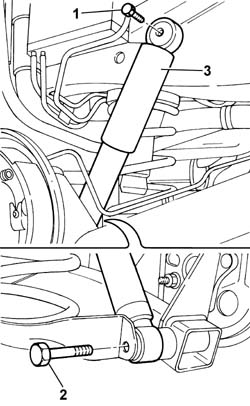
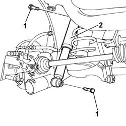

4420A30 L/H OR R/H REAR SUSPENSION DAMPER (ONE) - R+R
- Path
- Procedures > 44 SUSPENSION AND WHEELS > 4420 REAR SUSPENSION > 4420A REAR DAMPERS AND SPRINGS > 4420A30 L/H OR R/H REAR SUSPENSION DAMPER (ONE) - R+R
- Kind
- repair procedure (removal / refitting; the operation number is the code)
- Applies to
- all engines; all production periods
- Interactive page
- https://sloeber94.github.io/elrnDB-fPnd/en/#/2752809
Applies to: all engines; all production periods
 Removing
Removing
 Refitting
Refitting
Applies to: all engines; all production periods
Refitting
Removing
Applies to: engines: 1.2 8v; all production periods; only with equipment: 4x4
Removing
RefittingPosition the vehicle on a lift.
Op. 4450B06 LEFT REAR WHEEL R R
Or:
Op. 4450B08 RIGHT REAR WHEEL R R
Partly compress the suspension using a hydraulic jack.
1. Unscrew the upper bolt securing the shock absorber to the body and the lower bolt fastening it to the suspension wishbone.
2. Remove the rear shock absorber.

Applies to: engines: 1.2 8v; all production periods; only with equipment: 4x4
Refitting
RemovingCheck the condition of the rear shock absorber.
Fit the rear shock absorber.
Screw in the upper bolt securing the shock absorber to the body without tightening.
Screw in the lower bolt securing the shock absorber to the body without tightening.
Remove the hydraulic jack.
Op. 4450B06 LEFT REAR WHEEL R R
Or:
Op. 4450B08 RIGHT REAR WHEEL R R
Remove the vehicle from the lift.
Adjust the vehicle to conditions of theoretical design load to tighten the bolts screwed in previously to torque.
Move the vehicle to a platform lift so that the wheels are resting on the ground.
Arrange the vehicle in standardard A conditions, i.e. vehicle with spare wheel, tool kit, all tanks and reservoirs full and fuel tank full. Check that the tyre inflation pressure is within specified values.
Subject | Value | |
|---|---|---|
- | Front wheel pressure | 2 bar |
Subject | Value | |
|---|---|---|
- | Rear wheel pressure | 1.9 bar |
Tighten the bolts securing the shock absorber to the body and the rear axle.
Value daNm | Fastening | Component | Ø | |
|---|---|---|---|---|
- | 7 | Bolt | Upper | ?M10X1.25 |
Value daNm | Fastening | Component | Ø | |
|---|---|---|---|---|
- | 10 | Bolt | Lower | M12X1.25 |